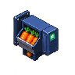
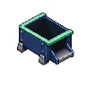

倉庫のカット人参が上限に達すると停止します。納品して在庫が減ると再開。出口が詰まった時も食材を消費しません。
確認用の牧場在庫 120 個
設備を選び、空いているマスをタップ。向きは「向き変更」で変えられます。移動・撤去は無料です。
加工品はここに保管されます。必要数をそろえて、掲示板の「納品する」を押しましょう。
未加工の人参を収納口に入れると、確認用の牧場在庫へ返ります。
自動設備は閉じている間も稼働します。手動のまな板台は長押ししている間だけ進みます。
確認版はこの端末のブラウザに保存します。牧場の実在庫は変更しません。専用Firebaseの本接続は別途準備します。